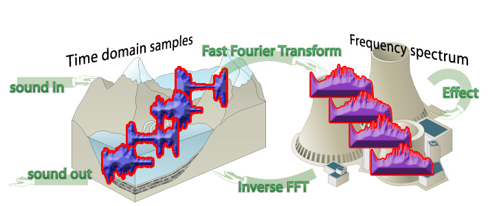
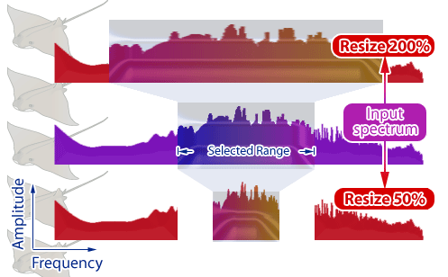
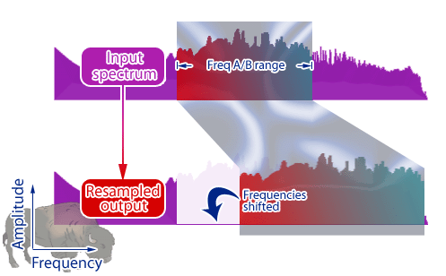
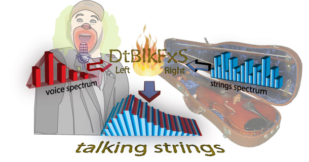
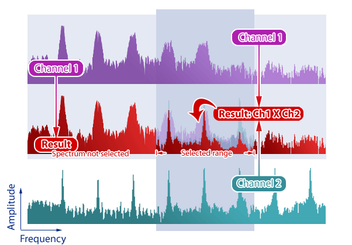
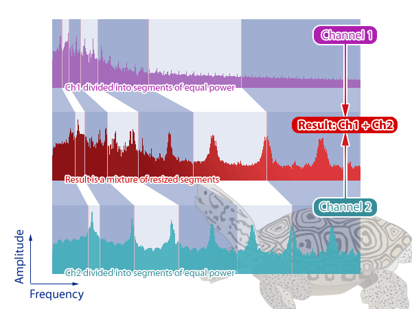

DtBlkFx Revision 1.1
VST audio
effect plugin by Darrell Tam (darrell.barrell@gmail.com)
User Guide
Compile date April 2008, Microsoft Windows version
This software incorporates code from fastest-fourier-transform-in-the-west 3.1.2 (www.fftw.org), portable network graphics library code from libpng/zlib (www.libpng.org/www.zlib.net), Steinberg VST plugin SDK 2.3 and Steinberg VSTGUI 3.5. VST is a trademark of Steinberg Media Technologies GmbH. User manual diagrams incorporate graphics from ian.umces.edu.
DtBlkFx is a Fast-Fourier-Transform (FFT) based Virtual Sound Technology (VST) plug-in for use in a variety of audio software running under Microsoft Windows 2000 or newer.
Use it for...
You can select up to 8 of the above effects to be run in series! Combining the effects in this way allows you to make completely new and surprising sounds.
DtBlkFx is freely distributable and is covered by
the terms of the GNU licensing agreement.
This effect works differently to most others - instead of filtering
or distorting audio data directly, it finds the frequency spectrum
via a fast-fourier-transform and then does stuff to that.

The steps are:
Note: The effect must delay the audio the length
of at least a block. By default it is set to 1 beat but you
can adjust this down to a fraction of a beat.
No installer... manually copy DtBlkFx.dll,
DtBlkFxS.dll and the dtblkfx directory to the
VST plug-ins directory of your music software (e.g.
If you have problems with Renoise 1.9.1 (plugins don't appear in the VST list) try deleting the
Here's the user interface from the Windows 1.1 version
(currently not available on the Mac).
What is all that stuff? Read on...
These are the parameters along the top.
| MixBack |
Percentage mix back of original sound. Set this to 100% to save CPU if you don't want any effect apart from delay. VstParam: MixBack |
| Power |
Power can be set to match or filter. Match causes the output "power" to be amplified or attenuated to be the same as the input "power". This means individual effect amplitudes are relative to one another. It also means that if you remove a large portion of your frequency spectrum then left over stuff may end up sounding very loud. Filter mode operates like a traditional filter where the output power may be very different to the input power. This mode is of most use when using DtBlkFx as a parametric equalizer. VstParam: MixBack shared parameter, if MixBack param < 0.5 then power is match otherwise power is filter. |
| Delay |
Since DtBlkFx processes audio in blocks it must delay the sound to operate . Delay controls the amount of delay introduced in music-beats. Hopefully this isn't too painful because if you
shift your audio track forward by the same number of beats then
all the timing is back to normal. I have had quite a few "complaints"
about the delay! But that is just how this effect works!! The maximum block size that can be processed is limited by the delay that you specify (i.e. small delays will only allow small block sizes). VstParam: Delay |
| Overlap |
Percentage overlap of blocks to use. A large overlap results in a smooth transit ions between blocks but more CPU while a smaller overlap can give interesting effects. VstParam: Overlap |
| Sync |
If sync is turned on then DtBlkFx will try align the blocks with the song tempo and any parameter changes. When turned off then the position of blocks will have no particular relationship with the song tempo. VstParam: Shared with Overlap param (on when > 0.5) |
| BlkLen |
Specify the maximum length of block to process audio data. If the specified Delay is less than the BlkLen specified then a smaller block length will be used and displayed with an asterisk (*). Longer block lengths give a higher frequency resolution but need more delay and CPU. Short block lengths can introduce interesting artefacts. VstParam: BlkLen |
Each effect line in the user interface consists of 5 parameters as shown below.
Note that the numbers in the selected frequency range correspond to C octave - e.g. "4" is the frequency of C-4.
| FreqA / FreqB |
Use these to select a frequency range for the effect. The frequency is displayed in Hertz and the selected range is shown in inverse on the spectrograms. For non-harmonic effects FreqA & FreqB are used to select or exclude a frequency range to process. Set FreqA less than FreqB to include the region between them otherwise the range is excluded. Use the smallest possible frequency range for an effect to
save on CPU. Right-click-drag on FreqA
or FreqB to slide both at
once. VstParam: <n>: FreqA / <n>: FreqB |
| Amp |
Amplitude controls the amplitude of the selected
frequency range for effect. For some effects it controls the mix-back
amount (wet to dry ratio). If the overall power parameter is set to match
then the gain/attenuation is relative - raising the Amplitude
of the
selected frequency range effectively decreases that of the
other frequencies. VstParam: <n>: Amp |
| Type |
Type controls which effect will be run. The possible effects are described in the next section. VstParam: <n>: Type |
| Value |
The meaning of value depends on which effect type has been selected. VstParam: <n>: Value |
The effect type is selected from the Type pop-up menu for each effect position.
There are 2 categories of effects as described below: Normal and Masking.
Normal Effects
|
Filter |
Parametric equalizer - adjust the amplitude of the frequency range specified. This does not use the effect value control. Some of the other effects have this capability too but will tend to use more CPU if this is all you want to do. |
|
Contrast |
Contrast changes the dynamic range of frequencies present in the sound. Positive contrast results in the reduction of noise and softer frequency components. Small amounts are useful for reducing distortion and un-muddying sound. When applied heavily only the loudest tones remain but can end up sounding like nasty audio compression on dodgey web videos. Negative values flatten the frequency spectrum and increase noise. Small to medium amounts are useful for adding "body". |
| Smear |
Randomizes the phase of the spectrum data which results in a flattening of the sound envelope. Sound smearing can be used to remove loop clicks and give a sustain effect. Similar to reverb in other plugins except that outcome is both forwards and backwards in time! |
| Thresh |
Boost or reduce frequency components with an amplitude above or below a particular threshold (set by the effect value) within the selected frequency range. You can get a similar sound to contrast. In previous versions of DtBlkFx this was known as "Weed". |
| Clip |
Clip frequency components greater than a particular level (set by the effect value). |
| Resize |
The resize effect
takes the selected range(s) and resizes them about the centre of each
range. The effect value
controls the amount of resize
and whether to reverse in time and/or
frequency.
 Squeezing the spectrum (resizing less than 100%) results in a
pitch shift towards the
range centre and also slows down the sound in time. Expanding the
spectrum (resizing greater than 100%) tends to make the block repeat. For some fun try in combination with the masking effects. |
| Resample |
Resample is just the same as what resample normally does - it changes the pitch and speed together.  When used with long block sizes (>300msec) you can hear the
segment of sound being repeated. If you use it with medium sizes
(say 50msec) it becomes more of a
pitch shifting effect. It is easy to get lots of clicking and popping with this
effect - one way to remove is to set a threshold mask for less than 40%
(say) followed by a 100% smear afterwards. Check the resample preset
for this. |
|
Shift |
Modify the pitch of the selected spectrum.
The constant shift mode may be similar to frequency modulating effects or listening to single-side-band CB radios. It tends to give a metallic quality as the sound loses its normal harmonic relationships. Shift resolution is affected by the block length - longer lengths result in higher shifting resolution. |
|
HarmShift |
Harmonic frequency shift by a constant number of notes (HarmShift)
or to a particular note (HarmRepitch). The stereo version of HarmRepitch can also pitch match
the left channel to the right channel -
this is displayed as right+notes in the effect value. These effects will only
work correctly on single voice or single note sounds (i.e. a chord
won't be properly pitch shifted). HarmShift
is similar in function to Shift
except it will generally do a better job for a single voice sound. DtBlkFx shifts the frequency spectrum in blocks that are aligned to harmonics of the sound (shown in alternating pink & blue). The fundamental frequency (centre of the first block) is automatically set to the loudest tone below 1/8th of the sample rate (i.e. 5.5Khz/F-8 at 44.1Khz sampling). Use the AutoHarmMask effect (described later) in the effect position immediately previous to control harmonic width and all/even/odd/between setting (refer oto the HarmFilt diagram) . In this case the fundamental is found from the loudest peak within the AutoHarmMask FreqA/B range (instead of below 1/8th of the sample rate). Note that the DtBlkFx's spectrogram display will not show the harmonic ranges as equally spaced as shown above because of the way it spaces the frequencies (logarithmic). |
| HarmFilt |
HarmFilt (Harmonic Filter) is a comb filter that allows you to modify amplitude at regular intervals or harmonics but leave the gaps between unchanged. You can use this to control the amplitude of a particular note or to produce interesting sweeping effects (similar to "phasing"). Be sure to set the effect Amp to be non-0 dB (e.g. try -inf or +40 dB) to make the effect do something. The above diagram shows the possible frequency ranges selected by the effect (semi-transparent red squares). The fundamental frequency corresponds to which ever FreqA/FreqB control has a lower frequency while the other controls the maximum frequency limit. The effect value sets the width around each harmonic and which harmonics you want to modify - all, dd, even or between. Note that the DtBlkFx's spectrogram display will not show the harmonic ranges as equally spaced as shown above because of the way it spaces the frequencies (logarithmic). |
| AutoHarm |
AutoHarm is similar to HarmFilt except that the fundamental frequency is automatically determined as the loudest tone below 1/8th of the sample rate (i.e. 5.5Khz/F-8 at 44.1Khz sampling). Use this to automatically track a pitched sound and change its amplitude. The harmonic width and all/odd/even/between setting is controlled by the effect value (see HarmFilt). |
|
Triangles |
These effects change the timbre of a pitched
input sound by power matching harmonics to various built-in
envelopes. Like AutoHarm, HarmShift & HarmRepitch these
effects only work as described on a single voice or note and the
fundamental is automatically determined from the loudest tone below
1/8th of the sample rate (i.e. 5.5Khz/F-8 for 44.1Khz sampling) The effect value varies the harmonic envelope according to a built-in sequence of envelopes. Use the AutoHarmMask effect (described later) in the effect position immediately above to control harmonic width and all/even/odd/between setting (refer oto the HarmFilt diagram) . In this case the fundamental is found from the AutoHarmMask FreqA/B range while the HarmShift/HarmRepitch FreqA/B range specifies the inclusion or exclusion range. |
| DoNotUse |
Effects marked DoNotUse don't
do anything - they are called this because I may put an effect there in
future. |
Mask Effects
Mask effects don't change the sound in
anyway by themselves but affect which frequencies a normal effect
immediately following will be applied. For example if you set the
first effect as ThreshMask and the second effect as Contrast
you can now choose to apply Contrast only to
frequency components above or below the threshold.
Masks will operate with any other non-mask effect
unless specifically noted.
Note: A normal effect can only have one mask (i.e. if you set 2 masks in a row then the first mask will be ignored).
| HarmMask |
HarmMask is the masking version of HarmFilt and allows you to apply any normal effect to the harmonics of a particular note. |
| AutoHarmMask | AutoHarmMask is the masking version of AutoHarm and has the same effect value meaning. |
| ASubH1Mask ASubH2Mask ASubH3Mask |
These effects are all variants of AutoHarmMask differing in that the fundamental frequency is taken as 1/2 (ASubH1Mask), 1/3 (ASubH2Mask) or 1/4 (ASubH3Mask) of the loudest frequency component within the selected range. |
| ThreshMask | Thresh mask is the masking version of Thresh and lets you apply the following "normal" effect to only frequencies above or below a particular threshold. |
Stereo Only Effects
These effects are only available in the stereo version of DtBlkFx because they require 2 channels to operate
| Vocode |
Vocode mixes the two channels by taking the frequency envelope of the left channel and applying it to the right channel (with the result in both the left and right). Example: feed voice into the left channel (red spectrum) and some strings into the right (blue spectrum). DtBlkFx will mix the voice and the strings to produce talking strings (which is just just what we need).  Vocode takes the frequency envelope of the left channel and applies it to the right channel. It operates by dividing the spectrum into a number of blocks (controlled by effect value) and adjusting the amplitude of each block from the right channel so as to power-match with the corresponding block in the left channel. When FreqA < FreqB then processing on the right channel is limited to that range while the entire spectrum is used from the left channel. If FreqB < FreqA then the entire spectrum of the right channel is processed while the envelope from the left channel is limited to the FreqB-FreqA range. Mask effects are not supported and will do nothing. |
|
HarmMatchLR |
HarmMatchLR & HarmMatchRL match the power from each harmonic in one channel to the corresponding harmonic in the other resulting in a different type of vocoding. HarmMatchLR uses the left channel as a reference and adjusts the right channel to match while HarmMatchRL goes the other way (right is reference, left is adjusted). Both versions of the effect output the adjusted channel on both left & right channels (i.e. reference is not output) and always set the overall output power to match the left channel. The fundamental frequency (centre of the first block) for each channel is automatically set by the loudest peak within the FreqA/FreqB range. The effect value controls the harmonic width and all/odd/even/between setting. Refer to AutoHarm for more information - as with all other harmonic effects these only work as described for single voice sounds (although it will do interesting things on chords). Use AutoHarmMask in the effect position immediately above to allow individual control over channel 1 & channel 2. The AutoHarmMask settings (FreqA/FreqB & value) refer to channel 1 while the HarmMatch settings refer to channel 2 - this means you can set different fundamental search ranges and harmonic settings for each channel. ThreshMask and HarmMask are not supported and will do nothing. The above diagram differs from what you will see in the spectrogram because of a different frequency scale (logarithmic). |
| CrossMix |
CrossMix
combines the left & right channels by multiplying the frequency
components (time-convolution) of the selected range(s). The value controls the ratio of left to right mix and which channel will be output for all other frequencies. 
|
| WarpMix |
WarpMix
produces an output by warping and combining the frequency spectrum of
the left and right channels as follows: 1. Divide the spectrum of each channel into segments of equal power (the number of segments is determined by the Amp percentage in for mode-1 WarpMix) 2. Resize each segment to a frequency and width intermediate to both channels (determined by the effect value) 3. Add the resized segments together using a ratio determined by the effect value 
The effect value also controls what mode WarpMix should operate in. Mode-1 proceeds as shown above while Mode-0 divides the spectrum into as many segments as there are frequency bins. |
DtBlkFx can be quite hard on your CPU! How can you reduce it?? Try these...
I agree this would be good... If anyone wants to write
some, please do!
Have a look through the presets for some hints.
Please send me work featuring BlkFx, customized user interface graphics, bug
reports, comments and suggestions.
| Author | Darrell Tam |
| darrell.barrell@gmail.com |